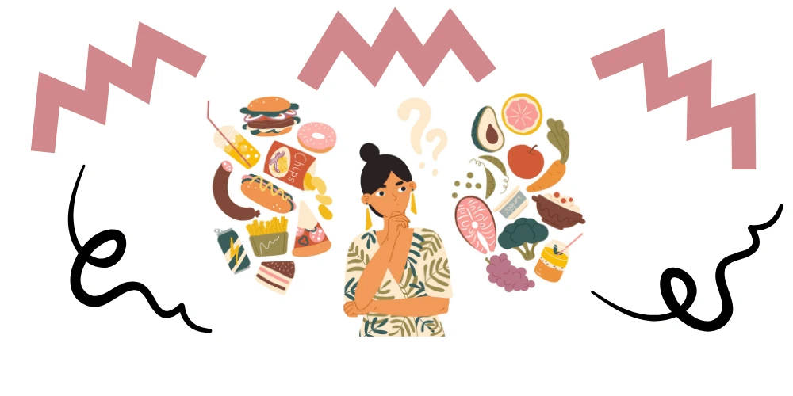
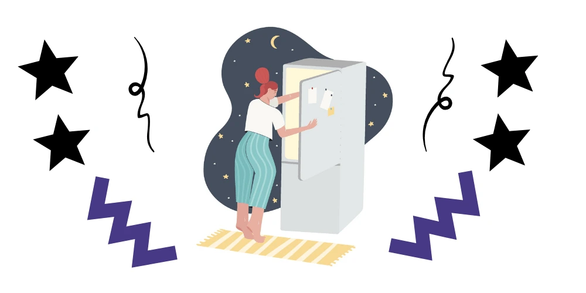

“How to stop binge eating at night” – A good night’s sleep is very important. It is just as necessary and important as exercising and eating a well-balanced diet. However, a lot of things can and do interfere with our ability to get a good night’s rest.
The things we do and eat can interfere with our body’s natural sleep patterns. One disruption is our body weight and our poor eating habits. One of the fastest ways to gain weight and disrupt sleep is binge eating at night. Binge eating at night is not only harmful to our body, but it is also harmful to our minds.
As we read this, let’s ask ourselves, “Do we eat at night, beyond supper/dinner, and is it necessary?” If the answer is, “Yes, I eat at night and I eat a lot,” then read on.

Defining the phrase, “Binge Eating”
Binge eating can mean a lot of things to a lot of people, so let’s trim down its definition.
Binge eating can be eating to the point where you already feel uncomfortably full. It could also mean eating alone due to embarrassment and eating rapidly than unusual. Some people also consume more than what is healthy and end up feeling guilty after the fact. If done often enough, at least once a day, every day, this is one of the signs of binge eating.
Eating dinner is a normal and integral part of our daily meal schedule. However, restricted daytime eating may lead to nighttime binging. Boredom, too, can trigger nighttime binging.
Why Do People Binge Eat?
Some people find comfort in food. Food fills the stomach and the feeling of being full creates a certain type of comfort for some people. We all know that some people use nighttime binging as a method to fall asleep faster, especially when they avoid daytime eating. Needless to say, nighttime binging is unhealthy because the body is at a resting state and is unable to burn the calories which result in weight gain.
It is important to understand the warning signs and symptoms of binge eating, may it be done during the day and most especially at night. Recovery from binge eating is not impossible with the right help and commitment.
Possible Causes of Nightime Binge Eating
In sum, there are 3 obvious reasons why people find comfort in eating at night.
Restricted DayTime Eating
It is human nature to want something that is forbidden. When a certain food is categorized as restricted, it creates a desire or want for that certain “forbidden food.” These foods may be cakes, sweets, chocolates, ice cream, chips, burgers, fries and all other foods that are assumably categorized as “unhealthy.”
When people categorize food to be unhealthy and should not be eaten, it creates a desire in the brain. Once we have that restricted food, we end up feeling guilty for eating it. In fact, psychology studies show that the more food is forbidden, the more a person is most likely to consume more of it when given a chance.
Exhaustion
According to PubMed.org, people who are not able to get a good night’s sleep (at least 6 hours) experience interference in their appetite. In sum, people who do not get enough sleep at night end up binging or eating more throughout the day. When a person is sleep-deprived, it causes an increase in ghrelin, the hormone responsible for stimulating our sense of hunger. Sleep deprivation also causes a decrease in leptin, the hormone that triggers our brain when we are already full.
Feeling tired due to the lack of rest or sleep also triggers a person to eat 400 more calories than those who were able to get 6 or more hours of sleep the night before. Therefore, binge eating, especially at night, can be decreased when a person is able to sleep amply.
The Feeling of Hunger
When people limit their consumption of a good meal throughout the day ends up binge eating at night, to pacify hunger pangs. Those who deprive themselves of eating a full and satisfying meal during the day, most likely end up making up for that hunger pang at night. Binge eating at night is especially true for those who do not get a good night’s sleep the night prior, mostly due to the increase of ghrelin and a decrease in leptin. Therefore, exhaustion or lack of sleep plus the deprivation of consuming a good meal during the day, causes nighttime binge eating.
For obvious reasons, there are some things that a person can do, to prevent binge eating at night.

Stop Binge Eating
Insufficient sleep connects with obesity, yet little we know about how repeating nights of insufficient sleep influence energy expenditure and balance. Here are some things that we all can do to curb the need to eat at night.
Zero-in on the Cause
For most. nighttime means off from work, it’s time to rest and relax. It is also at night when most people run to their kitchen or refrigerator and just eat to satisfy the hunger pangs they feel. Hunger pangs at night chalk up to any eating restrictions a person imposes during the day. Eating deprivation gives birth to either a binge eating disorder and night eating syndrome.
It cannot be denied that some people do use food to pacify any emotional hangups. It is not unusual that when a person is sad or angry, they run to vices to curb their emotional turmoil. Some go to the bar to drink and some run to the kitchen to eat. People with nighttime eating syndrome or nighttime binge eating usually commit two things to trigger such and these are (i) not sleeping enough, and (ii) food deprivation during the day.
Therefore, getting a good night’s sleep, averaging 6 to 8 hours per night, and eating properly during the day, on a schedule and in moderation can help address and curb nighttime binge eating.
Find the Triggers
In all things, it is important to find what sets us off, eating patterns included. As far as binge eating at night is concerned, it is important to try to dig into the reasons that cause overeating. Reaching for food when we are hungry is but normal. The abnormality sets in when we reach for food even if we are not hungry or are already full.
Keeping a “mood and food” diary may help identify what triggers a person to eat at night, and especially after dinner. If the listing of impulse binging at night is documented, eventually, a pattern will reveal. The diary will tell what time the nighttime binging usually happens and what was the trigger (could be deprivation from eating a full meal earlier that day, an upset feeling brought about by an undesirable memory, or perhaps something else).
Create a Routine
Not eating enough during the day may cause nighttime binge eating. Therefore, create a structure when it comes to eating and sleeping schedules. Getting a good night’s sleep allows the body to rest deeply and this includes the mind. The opposite, short hours of sleep or lack thereof, is a reason for higher calorie intake and poor quality diet. Poor sleeping habits can, in the long run, result in obesity and other diseases. Deep, long and scheduled sleeping patterns can promote better eating habits and wellness.
For most people with eating disorders, finding professional assistance and support is key to overcome erratic eating habits. Instead of binging, people must try to deal with anxiety and stress using other techniques like taking a walk, drinking more water, stretching or yoga.
Regular and scheduled meals can also prevent one from feeling too hungry and helps in managing cravings, too. Eating protein can also help in making us feel fuller. The last bit of advice to take is to store fewer junk foods at home and more nutritious food.
If nighttime binging has become a nightmare for you, perhaps a visit to a doctor would be helpful. Perhaps there is a deeper cause for the need to fill an empty void. The void can be caused by physical or mental causes that should not be taken lightly.